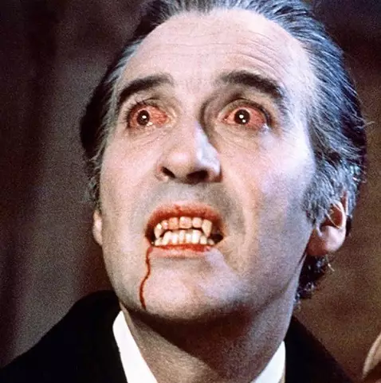

Elegante e noturno
O Vampiro
Senhor dos castelos sombrios, aparece depois do pôr do sol — sempre impecável e fã de histórias dramáticas. Um vampiro é uma criatura mítica que sobrevive alimentando-se da essência vital ou do sangue de seres vivos.